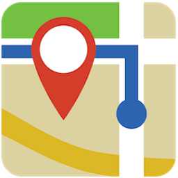

587 Mt Eden Rd
587 MT EDEN ROAD, MT EDEN
OPEN 9am - 6pm Every Sunday
Junk Sunday's Retro, Vintage, Antique and Mid-Centry Treasures
HOME
GALLERY
DIRECTIONS
CONTACT
Junk Sunday's Retro, Vintage, Antique and Mid-Centry Treasures
Get directions to
Junk Sunday
Join Us On Facebook

Get Directions
Junk Sunday's Retro, Vintage, Antique and Mid-Centry Treasures
HOME
|
GALLERY
|
DIRECTIONS
|
CONTACTS
DESIGNED BY:
webcoder.co.nz